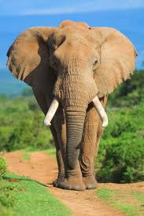

A family of elephant-like mammals of the Khorthumian order. Large animals. Their height reaches 3.5 m, and their weight reaches 4-5 tons. They have massive bodies, large heads, short necks, club-like legs, front feet are 5-toed, and hind feet are 5- or 4-toed. A small hoof will correspond to each toe. As a result of the upper lip and nose growing together, a long and flexible proboscis is formed. It is the organ of touch and smell, and at the same time the organ of moving objects. They have 4-4 teeth on their jaws. The teeth wear out over time and their place is taken by the next teeth, which is repeated 6 times during the life of the animal. They don't have it. The upper middle incisors are elongated and form middles, the length of which can be 4 m, and the mass can reach 100 kg. Only males have crotch, rarely developed in female African elephants (also very short). The stomach of elephants is simple, the thickness of the skin reaches 3-4 cm. The ball bearing is reduced. Makoba lasts up to 628 days (according to some reports, up to 24 months). They give birth to one calf, the weight of which reaches 90 kg. They become sexually mature at 17-20 years old and live up to 80 years. They feed on plants, sometimes they eat large branches, pines, leaves, tree bark. They often have to travel more than 100 km in search of food. Feel free to make your way through dense and foggy forest, swampy areas and more. They take water with a spoon and pour it into their mouths. They live in flocks of 10 to 100 individuals.
Elephants have been exterminated in many places. Currently, they are guarding everywhere. They use ivory (middle). The meat is edible. Two species of elephants are known: the Asian elephant (Elephas maximus) is distributed in India, Burma, Nepal, Thailand, Vietnam, Malaysia, the island of Sumatra, and Sri Lanka. It is easy to tame and train. As an endangered species, it is included in the "Red Book".